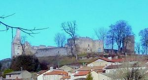
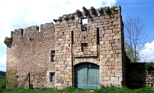
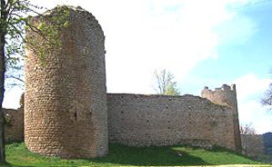
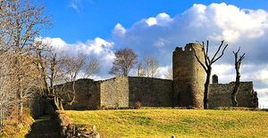
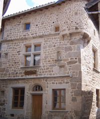

Recensement Jean-Claude Truffet
| Département | 63 — Puy-de-Dôme |
| Canton | Viverols |
| Commune | Viverols |
| Type d'édifice | Château |
| Période d'origine | XIII-XIV |





VIVEROLS, au XIe siècle. Dalmas de Baffie possédait cette seigneurie en 1070. Eléonore de Baffie, fille de Guillaume le Vieux et dEléonore du Forez, à la mort de son frère, resta seule héritière. Eléonore épousa Robert V, comte dAuvergne. À la mort dEléonore (1285), la terre de Viverols entra dans le domaine des comtes dAuvergne et y resta un siècle. Jean II, comte dAuvergne au XIVe siècle vendit Viverols à Morinot de Tourzel, seigneur dAllègre, chambellan du roi. Morinot eut pour fils Yves Ier et pour petit-fils Jacques dAllègre.Yves II, fils de Jacques, qui fut lieutenant-général des armées de Charles VIII et de Louis XII mourut à Ravenne, il était seigneur de Viverols en 1510. Le troisième fils dYves II, Christophe, qui épousa en 1530 Madeleine Le Loup de Beauvoir, devint ensuite possesseur de Viverols. Il eut pour fils Gaspard, chevalier de lOrdre du roi, qui épousa Charlotte de Beaucaire. La terre de Viverols resta dans la maison d'Allègre jusquau XVIIe siècle. En 1665, Claude d'Allègre, marquis de Beauvoir, fit un échange avec François dAurelle, marquis de Colombine. Claude prit la moitié du domaine de Crest et François dAurelle devint seigneur de Viverols. Jeanne Henriette dAurelle, héritière de cette maison, épousa au début du XVIIIe siècle Joseph de Montagut, comte de Bouzol, inspecteur général de la cavalerie. Les Montagut gardèrent leur terre jusquà la Révolution. Cette famille possédait le beau château de Bouzol dans la vallée de la Loire, et les châteaux de Plauzat et de Montravel en Auvergne. Les Montagut séjournaient peu à Viverols, ils habitaient surtout à Plauzat, cependant ils ne délaissèrent pas tout à fait leur vieux manoir du Livradois, puisquils y firent dimportantes réparations en 1740. Vers le milieu du XVIIIe siècle, la famille de Montagut sallia par mariage à la famille de La Salle, de cette union naquit Joachim de Montagut, dernier seigneur de Viverols. En 1783, il épousa Anne-Pauline de Noailles, fille du duc dAyen et arrière-petite-fille, par sa mère, du chancelier dAguesseau.
Il ne reste plus du château de Viverols que l'enceinte polygonale en ruines du XIIIe -XIVe siècle, Lemplacement de cette forteresse avait été judicieusement choisi. La butte de Viverols se trouve en effet placée à un point stratégique important au débouché de la vallée de lAnce, du château fort subsiste une enceinte flanquée de trois tours rondes et d'un pavillon d'entrée, dont la forme générale est à peu près pentagonale. La face ouest de l'enceinte est occupée par un corps de logis flanqué d'une tour à chaque extrémité. Le front sud se compose de deux parties. Celle de gauche possédait un corps de logis. Le plan général du château est pentagonal. De profonds fossés entouraient jadis les bâtiments seigneuriaux, les écuries, les communs ; ces fossés sont malheureusement comblés. Au sud et à louest, la forteresse profitait dune défense naturelle disparu. Deux tours sont percées d'archères elles semblent dater du XIIIe, ainsi que leurs courtines et les parties basses du corps de logis ouest, ce corps de logis a été remanié au XVIe siècle et percé de fenêtres à meneaux. Il renferme des cheminées, un escalier à vis dans l'angle qui se termine par une voûte. Le bâtiment d'entrée doit remonter au XVIIe siècle, et garde les traces des chaines et du tablier de l'ancien pont-levis. Le bâtiment situé à sa gauche, de la même époque, est flanqué d'une échauguette. Au pied de la courtine sud se trouve une poterne du XIIIe siècle. Le pavillon situé au centre de la cour remonte au XVIe siècle, ainsi que le large puits à armoiries situé dans la deuxième cour.
Famille de Dalmas de Baffie
"
Vestiges des remparts du château de Viverols